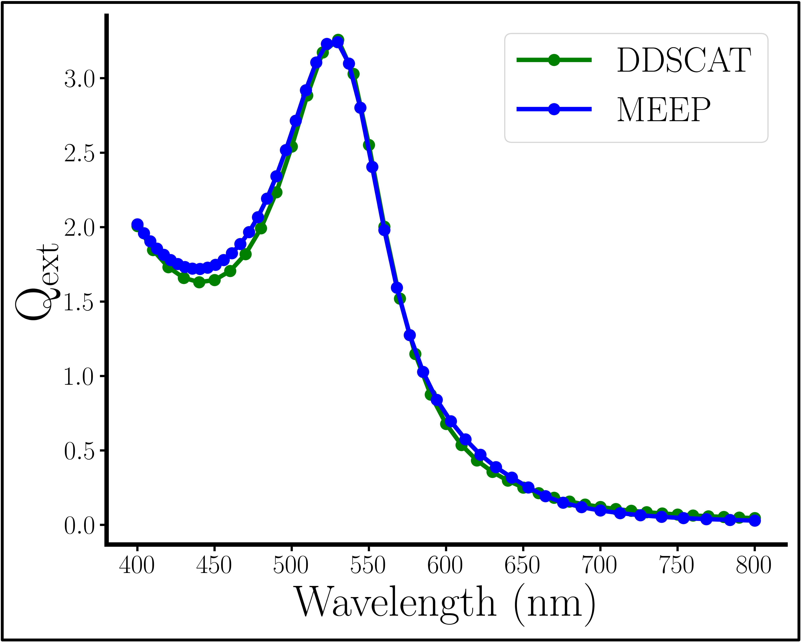
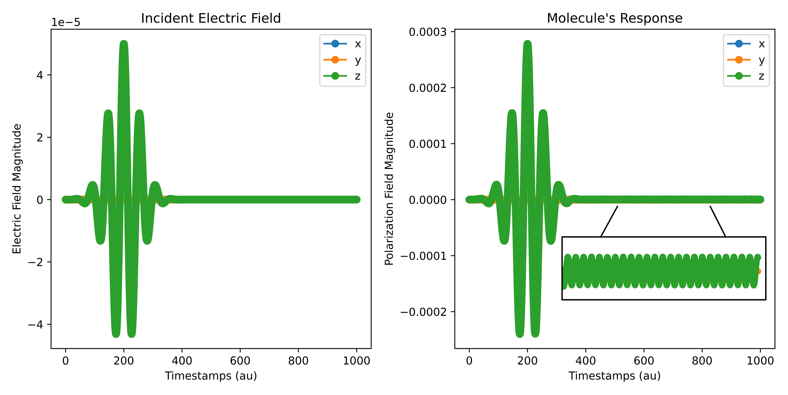
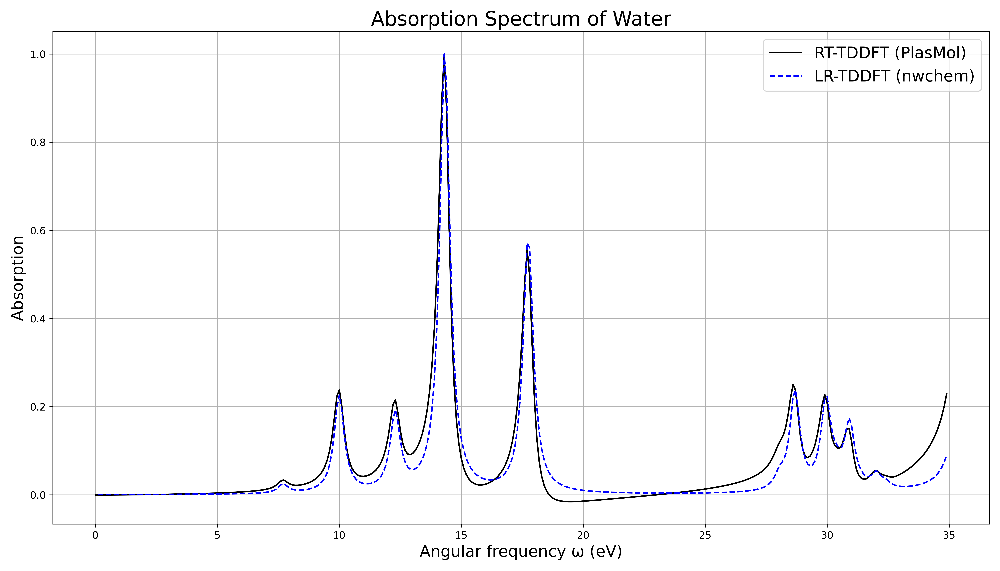

Tutorials
This section provides hands-on tutorials for using PlasMol. Each tutorial uses a template input file from the templates/ directory. Run commands from your project root, e.g.:
python src/main.p -f templates/template-classical.in -vv -l plasmol.log
Outputs will appear in your working directory (e.g., CSVs, images).
Tutorial 1: Classical NP Simulation (FDTD Only)
Simulate a gold nanoparticle interacting with a continuous electric field. This demonstrates basic FDTD output, including the optional cross-section images.
- Prepare Input: Copy
template-classical.inand adjust parameters (e.g., increaset_endfor longer simulation). Example snippet:
start general -- 'general' block wrappers are not necessary
dt 0.1 -- au
t_end 50 -- au
eField_path eField.csv
end general
-- classical portion
start classical
start source
sourceType continuous
sourceCenter -0.04
sourceSize 0 0.1 0.1
frequency 5
end source
start simulation
cellLength 0.1
pmlThickness 0.01
-- spherical objects with an incident electric field propagating in the
-- +y direction with a z electric component will have the following symmetry
symmetries Y 1 Z -1
surroundingMaterialIndex 1.33 -- surrounds NP in water
end simulation
start object
material Au
radius 0.03
center 0 0 0
end object
start hdf5
timestepsBetween 1 -- saves a picture every timestep
intensityMin 3
intensityMax 10
imageDirName hello -- saves images to path hello/.
end hdf5
end classical
- Run Simulation:
python src/main.py -f /path/to/classical.in -vv -l plasmol.log
or
python -m src.main -f /path/to/classical.in -vv -l plasmol.log
-
View Outputs:
eField.csv: Electric field data. Path defined in input file.-
hello/: PNG cross-sections (if HDF5 enabled); a GIF is auto-generated. Cross-section of a spherical nanoparticle in the xy-plane receiving incident light, whose electric component is measured in the z-direction. Dashed outline added for clarity.
Cross-section of a spherical nanoparticle in the xy-plane receiving incident light, whose electric component is measured in the z-direction. Dashed outline added for clarity. -
For extinction spectra, add custom tracking in
src/classical/simulation.py(see API Reference).  Using instructions from MEEP's documentation and code examples, one can compare the Qext spectrum between the FDTD and DDA methods, implemented using MEEP and DDSCAT respectively.
Tutorial 2: Quantum Molecule Simulation (RT-TDDFT Only)
Compute the induced dipole of a water molecule using a pulsed field. This uses only RT-TDDFT.
-
Prepare Input: Copy
template-quantum.in. Unless you want an absorption spectrum (see Tutorial 3), do not addtransformto rttddft block.Example snippet:
start general -- 'general' block wrappers are not necessary dt 0.05 -- au t_end 1000 -- au eField_path eField.csv end general -- rt-tddft portion start quantum start rttddft start geometry O 0.0000000000 0.0000000000 -0.1302052882 H 1.4891244004 0.0000000000 1.0332262019 H -1.4891244004 0.0000000000 1.0332262019 end geometry units bohr check_tolerance 1e-12 charge 0 spin 0 basis 6-31g xc pbe0 resplimit 1e-20 propagator magnus2 pc_convergence 1e-12 maxiter 200 transform -- important to include this flag for abs spectrum simulation end rttddft start files start chkfile -- in case simulation crashes frequency 100 path chkfile.npz end chkfile pField_path pField.csv pField_Transform_path pField-transformed.npz eField_vs_pField_path output.png eV_spectrum_path spectrum.png -- this image will display the absorption spectrum end files start source shape pulse peak_time_au 200 width_steps 1000 wavelength_nm 400 -- nm intensity_au 5e-5 dir z end source end quantum -
Run Simulation:
python src/main.py -f /path/to/quantum.in -vv -l plasmol.log -ror
python -m src.main -f /path/to/quantum.in -vv -l plasmol.log -r -
View Outputs:
eField.csv: Incident field; plots usingsrc/utils/plotting.pyfor visualization.pField.csv: Induced dipole (polarization) data.
 Example spectra comparing a pulse felt by the molecule (left) with the molecule's induced dipole (right). Inset highlights molecules small oscillations due to excitement.
Tutorial 3: Molecular Absorption Spectrum (RT-TDDFT with transform flag)
Compute the absorption spectrum of a water molecule using three Dirac delta kicks. This uses multithreaded RT-TDDFT and Fourier transform.
-
Prepare Input: Copy
template-quantum.in. Enabletransformfor spectrum calculation.Example snippet:
start general -- 'general' block wrappers are not necessary dt 0.1 -- au t_end 4000 -- au eField_path eField.csv end general -- rt-tddft portion start quantum start rttddft start geometry O 0.0000000000 0.0000000000 -0.1302052882 H 1.4891244004 0.0000000000 1.0332262019 H -1.4891244004 0.0000000000 1.0332262019 end geometry units bohr check_tolerance 1e-12 charge 0 spin 0 basis 6-31g xc pbe0 resplimit 1e-20 propagator magnus2 pc_convergence 1e-12 maxiter 200 transform -- important to include this flag for abs spectrum simulation end rttddft start files start chkfile -- in case simulation crashes frequency 100 path chkfile.npz end chkfile pField_path pField.csv pField_Transform_path pField-transformed.npz eField_vs_pField_path output.png eV_spectrum_path spectrum.png -- this image will display the absorption spectrum end files start source shape kick -- needs to be a delta 'kick', not 'pulse' peak_time_au 0.1 width_steps 5 intensity_au 5e-5 -- dir z -- do not need to specify direction when transform flag used end source end quantum -
Run Simulation:
python src/main.py -f /path/to/abs_spectrum.in -vv -l plasmol.log -ror
python -m src.main -f /path/to/abs_spectrum.in -vv -l plasmol.log -r -
View Outputs:
pField.csv: Induced dipole (polarization) data.spectrum.png: Absorption spectrum plot.
 Absorption spectrum run as compared to an LR-TDDFT standard from nwchem.
Tutorial 4: Full PlasMol Simulation (NP + Molecule)
Simulate a gold NP with a water molecule inside, tracking plasmon-molecule interactions.
-
Prepare Input: Copy
template-plasmol.in. Combine classical NP with quantum molecule. Example snippet:```lua start general -- 'general' block wrappers are not necessary dt 0.1 -- au t_end 4000 -- au eField_path eField.csv end general
-- rt-tddft portion start quantum start rttddft start geometry O 0.0000000000 0.0000000000 -0.1302052882 H 1.4891244004 0.0000000000 1.0332262019 H -1.4891244004 0.0000000000 1.0332262019 end geometry units bohr check_tolerance 1e-12 charge 0 spin 0 basis 6-31g xc pbe0 resplimit 1e-20 propagator magnus2 pc_convergence 1e-12 maxiter 200 transform -- important to include this flag for abs spectrum simulation end rttddft start files start chkfile -- in case simulation crashes frequency 100 path chkfile.npz end chkfile pField_path pField.csv pField_Transform_path pField-transformed.npz eField_vs_pField_path output.png eV_spectrum_path spectrum.png -- this image will display the absorption spectrum end files -- if source is given in quantum block but a classical block is found, -- this source will be ignored. -- start source -- shape kick -- peak_time_au 0.1 -- width_steps 5 -- intensity_au 5e-5 -- end source end quantum -- classical portion start classical start source sourceType continuous sourceCenter -0.04 sourceSize 0 0.1 0.1 frequency 5 end source start simulation cellLength 0.1 pmlThickness 0.01 -- spherical objects with an incident electric field propagating in the -- +y direction with a z electric component will have the following symmetry symmetries Y 1 Z -1 surroundingMaterialIndex 1.33 -- surrounds NP in water end simulation start object material Au radius 0.03 center 0 0 0 end object start hdf5 timestepsBetween 1 -- saves a picture every timestep intensityMin 3 intensityMax 10 imageDirName hello -- saves images to path hello/. end hdf5 end classical```
-
Run Simulation:
python src/main.py -f /path/to/plasmol.in -vv -l plasmol.log -ror
python -m src.main -f /path/to/plasmol.in -vv -l plasmol.log -r -
View Outputs:
- Similar images, gifs, and spectra to the tutorials above can be found in this instance too.
- For SERS or other metrics, inject custom functions (see API Reference).
These tutorials cover basics—experiment with parameters and check logs for issues. For advanced topics, see API Reference.